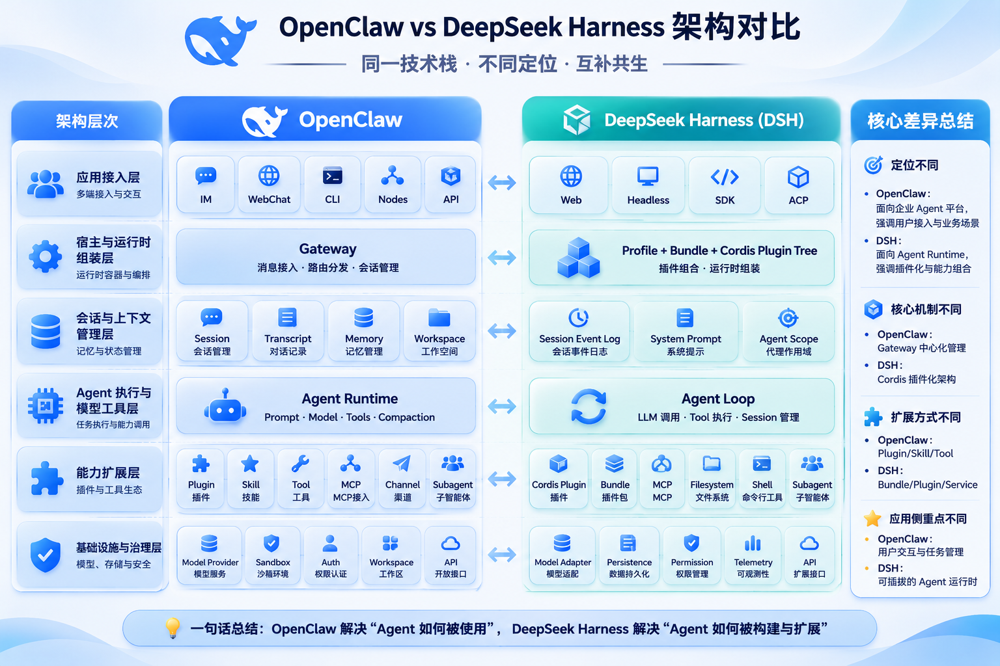
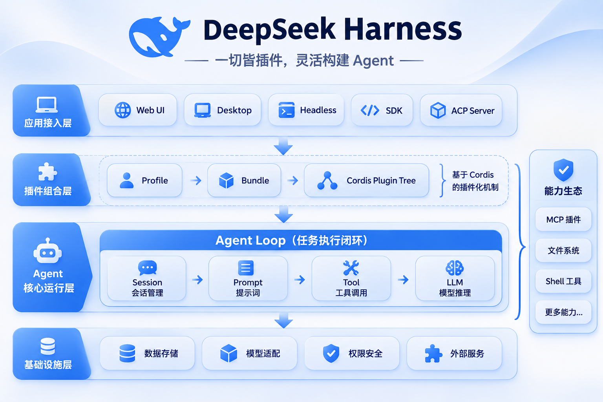
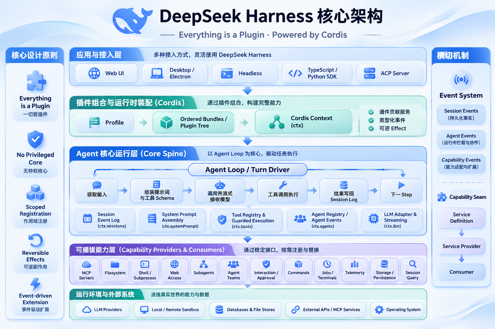
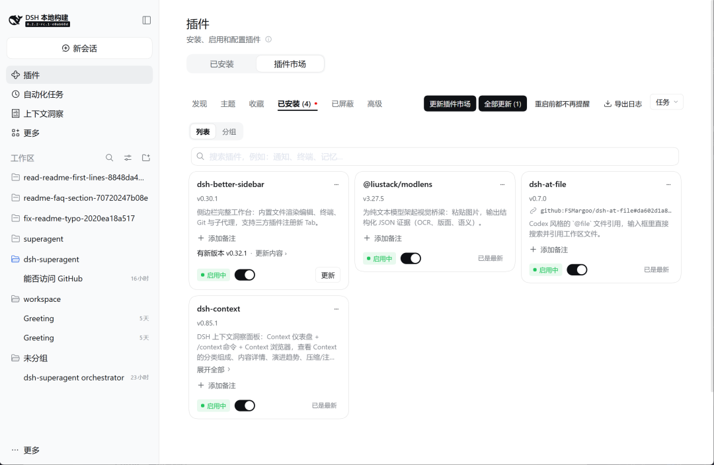
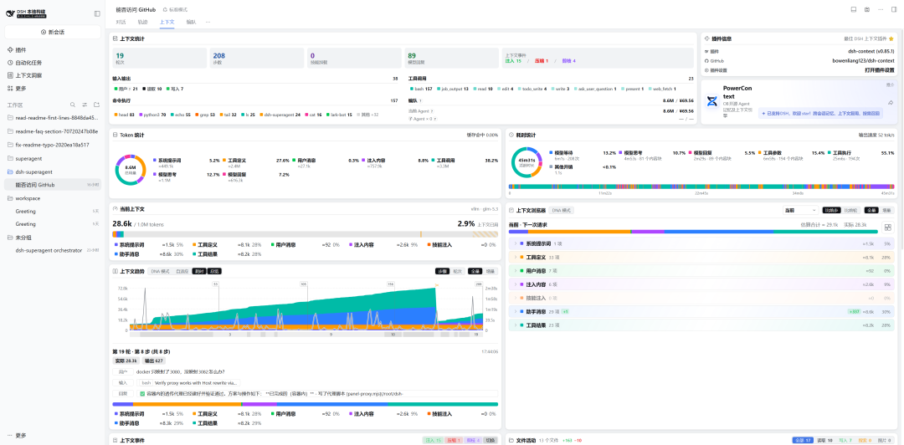

面向 OpenClaw 开发者的 DSH 入门与迁移指南
DSH 将模型、工具、Skill、MCP、会话和智能体循环做成可组合插件，让开发者按需组装自己的 Agent 运行时。
packages/*/*/package.json 文件数，含实验性包web、headless、sdk、sdk-minimal、acp；desktop 由 Electron 桌面应用单独管理。统计口径：2026-11-11 仓库快照，包数仅统计上述路径，接缝数按同一版本能力接缝表中的 seam 行统计。
先安装 DSH CLI，确保终端可调用 dsh。实际运行任务还需要模型凭据；默认 DeepSeek 提供者读取 DEEPSEEK_API_KEY。请在你希望作为工作区的目录中执行命令。
dsh --profile headless --dump-configdsh --profile headless "用一句话介绍 DeepSeek Harness"参阅仓库的 CLI 配置说明和Headless 命令参考。跑通后再逐项迁移 OpenClaw 能力。
如果你已经使用过 OpenClaw，可以把 DSH 理解为一个更偏底层运行时、插件组合和能力扩展的 Agent Harness。本文帮助你从熟悉的 OpenClaw 概念出发，快速完成 DSH 入门。
DSH 负责组合模型、工具、Skill、MCP、会话和 Agent Loop。开发者可以选择已有能力，也可以通过插件扩展运行时——扩展方式是挂载新插件，而非修改核心代码。
模型适配器、工具注册表、会话日志乃至智能体循环本身都是插件。换一个提供者，就能换掉对应能力，不存在需要打补丁的中心枢纽。
同一底座经 Profile + Bundle 组合派生 Web、SDK、Headless、ACP 等多种形态，适合把 Agent 能力嵌入现有产品。
OpenClaw 更关注"如何把 Agent 提供给用户"，DSH 更关注"如何构建和扩展 Agent 本身"。两者互补共生，不是简单的替代关系。
两者不是替代关系：OpenClaw 更像面向用户和业务场景的 Agent 平台，负责把智能体接入各种交互渠道；DSH 更像可嵌入、可组装的 Agent Runtime，负责构建和扩展智能体本身。从 OpenClaw 迁移到 DSH，不是简单替换产品，而是从"使用现成 Agent 平台"转向"构建可控的 Agent 运行时"。

| 对比维度 | OpenClaw | DeepSeek Harness (DSH) |
|---|---|---|
| 核心枢纽 | Gateway —— 消息接入、路由分发、会话管理 | Cordis Context / Plugin Tree —— 插件树与共享上下文 |
| 主要抽象 | 平台服务与 Agent 路由 | 插件 / Service / Event |
| 扩展方式 | 平台插件、Channel、Tool、Skill | Bundle、Plugin、Service Provider |
| 运行时组装 | Gateway 中心化管理，统一接入多端（IM / WebChat / CLI / Nodes / API） | Profile + Bundle + Cordis Plugin Tree，配置组合与逐层 patch |
| 典型价值 | 把 Agent 接入用户工作流 | 灵活构建与替换 Agent Runtime |
OpenClaw 面向企业 Agent 平台，强调用户接入与业务场景；DSH 面向 Agent Runtime，强调插件化与能力组合。
OpenClaw 采用 Gateway 中心化管理；DSH 采用 Cordis 插件化架构，连智能体循环本身都是可替换的插件。
OpenClaw 通过 Plugin / Skill / Tool 扩展；DSH 通过 Bundle / Plugin / Service 组合，注册即副作用，卸载自动回滚。
OpenClaw 侧重用户交互与任务管理；DSH 侧重可插拔的 Agent 运行时，供上层产品组合复用。
这些能力在 DSH 中都是插件，换实现即换能力，无需改动核心代码，不锁定供应商。
通过 SDK（TypeScript / Python）或 Headless 形态，把智能体运行时直接组合进你自己的应用。
Web、SDK、Headless、ACP 共享同一底座，按场景选择 Profile 即可，研发成果复用度极高。
沙箱后端、审批策略、权限最小化与"模型可见即已记录"的会话日志，满足企业合规要求。
版本化持久化格式让长周期智能体工作流的每一步都能重建与追溯。
扩展方式是挂载新插件、选择已有插件，或实现一个新的插件接缝——而不是 fork 核心代码。
DSH 的插件有两种分发与挂载形态：纯 Cordis 插件是一个独立 Node 模块，通过 cordis.patch.yml 单独挂载；Bundle 插件则是一个组合包，自带 cordis.patch.yml，把多个插件、配置修改与默认项禁用打包在一起分发。选择哪种，取决于你要"一个功能"还是"一套方案"。
| 对比维度 | 纯 Cordis 插件 | Bundle 插件 |
|---|---|---|
| 形态定位 | 单个独立功能：一个 Node 工具、一个服务，或一个自渲染 UI 的插件 | 一套组合方案：多个插件 + 配置修改 + 禁用默认项，整体分发 |
| 配置载体 | 在 cordis.patch.yml 中逐条 insert，一行一个 |
自带 cordis.patch.yml，安装即生效，配置内置于包中 |
| UI 组件 | 自渲染 UI；若声明 dsh.client 走官方静态 client 通道，则通常需要 Bundle 形态 |
提供官方格式的浏览器端 UI 组件的推荐通道 |
| 迭代方式 | 热更新，改配置、挂载或移除插件立刻可见，适合边开发边调试 | 一次性安装、不常改动，适合配置好就不动的基础功能包 |
| 控制粒度 | 随时在 cordis.patch.yml 加一行 / 注释一行，实时挂载或移除 |
整包启停，粒度在包级别 |
下表按职责比较概念，方便找到 DSH 的相关组件；它不是一份可以直接替换的配置或数据映射。
| OpenClaw 概念 | DSH 相关组件 | 对照说明 |
|---|---|---|
| Gateway | 入口插件；Profile、Bundle 与 Cordis 插件树 | 没有可直接替换 Gateway 的组件。入口插件接收请求，Profile 与 Bundle 负责组装运行时，不负责复刻 Gateway 的路由和渠道。 |
| Channel | Web / SDK / ACP / 自定义接入插件 | 外部请求通过对应接入插件进入运行时 |
| Agent | Agent Loop 插件（core/agent-loop） |
智能体循环本身也可以替换 |
| Skill | Skill 插件 / 工作区技能（skill/skill） |
可复用通用的 Markdown 指令；宿主专用的工具、路径、脚本和权限需要检查并适配。 |
| Tool | Tool / Service Provider（ctx.tools） |
工具通过插件注册到运行时 |
| MCP Server | mcp-client / mcp-manager |
兼容的 MCP 服务端可以复用；连接配置须按 DSH 的字段和传输方式重新填写。 |
| Session | Session / Persistence 插件（core/session） |
DSH 使用自己的会话事件和持久化格式，不能直接打开 OpenClaw 的会话存储。 |
| Plugin | Bundle / Plugin / Service | DSH 的扩展单位更偏运行时能力组合 |
先用三层简化模型理解 DSH，再看架构图与内部细节。
请求从 Web、CLI、SDK 或 ACP 进入 DSH，由对应接入插件接收，没有中心 Gateway。
通过 Profile、Bundle 和 Plugin 组合出一个具体的 Agent Runtime：bundle 清单 → cordis.patch.yml → home 补丁 → --patch 逐层覆盖。
模型、工具、Skill、MCP、沙箱、会话和 Agent Loop 都由插件提供，均可替换。


插件向共享上下文贡献服务、类型化事件与可逆副作用（registration 即 effect，卸载时自动回滚）。产品每一部分都是插件——模型适配器、工具注册表、会话日志、智能体循环本身。扩展方式是挂载新插件，而非修改核心代码。
Profile 是 Harness home 中的命名组合（bundle 清单、树外插件、用户补丁）；Bundle 是配置行与代码的分发格式，可被上层逐层 patch。
core/session 只追加的 SessionEvent 日志；core/agent-loop 默认驱动器；core/tools 带作用域的工具注册表与守卫执行管线；core/system-prompt 提示词组装；llm/llm 适配器接缝。
一个接缝由服务定义、服务提供者和消费者组成。文件系统与子进程共享同一执行环境，因此 Bash、PTY 和 LSP 可以与文件操作在同一个本地或远程环境中运行。
先跑通一个 Headless 任务，再按下列顺序逐项迁移。用 --dump-config 检查插件配置是否合并到位，再运行任务验证加载、调用和权限；Gateway 的渠道和路由需按目标入口单独适配。
把可移植的 Markdown 指令放到 DSH 支持的技能目录。逐项检查 OpenClaw 专用的工具名、路径、脚本和权限，并在 DSH 中验证技能能否加载及执行。参阅 Skill 加载说明。
保留兼容的服务器，按 mcp-client 配置说明重填连接：本地进程检查 stdio 命令、参数与环境变量，远端检查 Streamable HTTP 地址与鉴权。需要通过设置管理连接时，参阅 mcp-manager。接入后核对工具输入定义和权限，并试调一个低风险工具。
将 OpenClaw Tool 改造成 DSH Plugin 或 Service Provider，在 ctx.tools 上注册；补齐输入 schema、错误处理和权限声明。
将模型供应商配置映射到 DSH 的 LLM 插件（llm/llm 适配器接缝）；验证流式输出、取消和重试行为。
默认从新 Session 开始。确实需要保留历史时，先备份 OpenClaw 数据，再按 DSH 会话格式设计转换并在副本上验证；不要将原始存储直接放入 DSH 会话目录。
根据目标场景选择 Web、SDK、Headless 或 ACP Profile；建议先用 headless profile 跑通单任务，再接多端。
| 迁移项 | 需验证的工作 |
|---|---|
| 业务逻辑 / 工具代码 | 复用不依赖宿主的业务逻辑；将旧工具注册方式改为 DSH 插件，并验证输入定义、错误处理和权限。 |
| 运行时组合方式 | 用 Profile、Bundle 与 cordis.patch.yml 组装插件，按目标版本检查 engines.dsh 兼容性。 |
| 多端接入（IM / WebChat / Nodes） | 按各渠道验证鉴权、路由和会话关联；DSH 入口不会继承 Gateway 的设置。 |
DSH 原生依赖 @opentelemetry/* 全家桶（api / api-logs / sdk-logs / otlp-exporter-base / otlp-transformer），@deepseek-ai/dsh-otel 插件注册 ctx.otel 服务，提供两个现成的 OTLP 上报通道工厂：createEventReporter()（普通事件、按条数批处理）与 createSessionLogReporter()（会话日志、4MB 字节上限）。OTLP 端点（OTLP /v1/logs）不变，后端（Jaeger / Tempo / Loki / 厂商 collector）无需改动。
① 直接挂载 @deepseek-ai/dsh-otel，用 ctx.otel 的 reporter 工厂自建上报，改动最小；② 替换默认后端：dsh-base 已挂 session-telemetry-otel（默认 FEEDBACK_ONLY，由 DSH_TELEMETRY_MODE 控制），通过 cordis overlay patch 替换为自己的 SessionTelemetryBackend 实现（emit / flush / shutdown），可复用现成 OTLP 传输；③ 只做脱敏：在 session-telemetry/record waterfall 上改写记录（监听器必须调 next()）。
@opentelemetry/sdk-trace，DSH 不会代管。SessionTelemetryRecord（ledger 逐事件镜像 + ops 运维信号两个 channel），会话事件序列化为 eventName: "session-log"、JSON content 的 log record；OpenClaw 的 span/attribute 结构需要重新映射为 log 字段。session-telemetry-otel 默认 FEEDBACK_ONLY（仅用户提交 feedback 时上传），要持续上报需改 DSH_TELEMETRY_MODE 或配置覆盖。shutdown() drain（dsh-base 默认 3000ms），关键审计数据不要只依赖此通道。emit() 在 session/event 热路径上，只能入队，不能同步上报。从想法到可运行的能力，只需六步。先理解流程，再逐步补充真实代码。
# 第一个 DSH 插件：从创建到验证 创建插件 # 新建 Cordis 插件包，声明 engines.dsh 兼容性 ↓ 声明依赖 # 在 package.json / bundle 中声明所依赖的服务与接缝 ↓ 注册 Service / Tool # ctx.effect() 注册服务；ctx.tools 上注册工具并补齐 schema ↓ 加入 Bundle # 将插件加入 bundle 清单，或经 cordis.patch.yml 挂载 ↓ 启动 Profile # dsh --profile <name> 启动运行时 ↓ 验证能力 # dsh --profile <name> --dump-config 检查插件树，运行对话验证工具
一个插件 = 向共享上下文贡献的服务、类型化事件与可逆副作用。注册即 effect（ctx.effect() / ctx.on()），卸载时自动回滚，无需手写清理逻辑。
Tool 在 ctx.tools 上注册，需补齐输入 schema、错误处理和权限声明；Service 通过能力接缝提供（服务定义 + 提供者 + 消费者三角色）。
把插件加入 bundle 清单，或通过市场安装后写入 cordis.patch.yml；启停单个插件仅改写条目的 disabled，与 HMR 配合免重启生效。
① 所有贡献必须经 ctx.effect() / ctx.on()；② 瀑布监听器必须调用 next()；③ 模型可见的新输入必须有对应 SessionEvent。动手前先读 docs/architecture.md 与 Cordis primer。
市场不是集中式商店，而是用户自选的插件索引：任意静态主机可发布一个 JSON 索引文件（格式 format: 1），声明条目的 npm / Git 来源、版本与 engines 兼容性。dsh-plugin-market 服务读取索引并校验，搜索基于 MiniSearch 模糊匹配，支持 CJK 二字组合与编辑距离容错；每个版本标注安装状态与 DSH 兼容性。
安装本质是 pnpm add <spec> 到 profile 目录（注册表名、git URL、tarball、本地路径均可），npm 官方源失败时回退 npmmirror。安装前 inspect(spec) 预检（pnpm view + git ls-remote 连通性）；失败自动回滚 package.json 与 lockfile 快照。与 HMR 配合免重启生效；启停单个插件仅改写 cordis.patch.yml 条目的 disabled。


mcp-client 连接一台外部 MCP 服务器并将工具注册到 ctx.tools；mcp-manager 管理由设置驱动的客户端连接。
从工作区与配置加载 Skill。复用社区技能前，检查它依赖的工具、路径、脚本和权限。
统一接口后的子智能体提供者：从新建子 agent 到委派给另一个产品的 turn 都可实现，是并行化与上下文隔离的核心手段，search / 计算密集型任务的首选。
通过 ctx.sandbox 限制派生进程的权限；配置时要确保相关进程与文件操作使用同一执行环境。
默认关闭的可选组合包，挂载市场服务并在 Web 端启用"发现"标签页——装上它，插件市场本身就是即装即用的插件，直观展示 DSH 组合模型的自我举例。
experimental/ 下约 60 个可公开安装但无产品支持承诺的插件：liveshare、translator、speech-to-text、worktree、cua、forge 等，按需自取。
以下内容适合在完成入门理解后参考：当前实现状态、带来的收益与不足、风险提示。更底层的工程与治理细节已折叠。
| 维度 | 现状 |
|---|---|
| 仓库组成 | packages/ 按能力分组，包括 core、llm、shell、sandbox、session、client 和 mcp 等；仓库还包含 Cordis 源码、Python SDK、原生 Node.js 扩展和 VitePress 文档站。 |
| 工程质量 | strict TypeScript 全量编译；CI 覆盖率门禁为源码逐文件 100%；lint、跨文件克隆检测（duplication）、publint/hygiene、文档门禁（doc-sync、doc-budgets）齐备；快照测试基于无密钥录制会话回放，e2e 无 DEEPSEEK_API_KEY 时自跳过。 |
| 工程纪律 | 禁止新增 as unknown 断言；品牌化跨边界 id；跨边界显式 resolve 而非隐藏默认值；错误处理遵循结构化失败与本地化报告技能规范；PR 描述、标签体系、堆叠 PR 流程均有专门技能约束。 |
| 兼容性策略 | 公开 API 处于 pre-stable，破坏性变更须同步全部消费者并记入升级指南；会话格式使用单调 SCHEMA_VERSION，相邻迁移可新增版本后继但绝不移动/覆盖已提交代次。 |
| 平台支持 | Node ≥ 24.9 + pnpm workspaces；macOS/Linux 快照夹具；Windows 桌面打包与签名流程（含 wine 诊断通道）。 |
| 实验性能力 | experimental/ 承载经评估但未承诺产品支持的能力，其状态独立于可选交付；非实验包需产品使用或显式分类备案。 |
--patch 多层覆盖，配置错误往往不报错而是静默改变行为。DSH 的不稳定，根源在于它被官方明确定位为实验性的开发者预览软件：设计上就不追求生产级稳定性，"一切皆插件"的架构叠加快速迭代节奏，直接导致了下述各类问题。
dsh 的 SAFETY.md 明确指出：该软件未经安全审计，不得视为安全或可用于生产，沙箱也"不保证隔离"。它本身就能执行模型生成的代码和命令——错误的输出、有缺陷的插件或配置错误，都可能导致文件被改删或数据泄露。这是最根本的风险来源。
这是社区反馈最集中的痛点。官方 README 用全大写字母警告会有破坏兼容性的变更。实际案例包括：升级后旧版用户预设因字段名从 text 改为 prefix 而完全无法创建新会话；会话持久化格式从 v0 到 v2 的迁移多次出问题，导致历史会话损坏或无法加载，有用户形容"历史 session 都嘎了"。
"一切皆插件"的设计放大了不稳定性。一个插件的缺陷可能拖垮整个应用：有报告显示安装特定插件后所有工具调用瘫痪；插件间依赖冲突或导出项缺失，也可能导致启动循环崩溃。同时，官方对底层包的拆分或重构（如 dsh-client-runtime 被拆散、ApiProxy 被移除），会迫使依赖它的第三方插件必须跟着修改，否则就会失效。
具体功能点上的不稳定性也持续存在：有用户报告模型会在没有对应工具实现时自行"幻觉"出工具调用，并将内部标记（DSML）泄露到普通文本中干扰对话；重试过程中切换模型不生效，系统继续用旧模型消耗配额；桌面端也曾出现内核重启白屏、冷启动鉴权超时等问题。
这并非偶然的疏漏，而是其开发模式的直接结果：
dsh 的不稳定是其作为快速演进预览版软件的固有特征。追求稳定，就谨慎对待每一次升级并做好配置备份；参与生态，就持续跟进官方的变更说明（升级指南）。
围绕 DSH 的落地与评估，目前已完成以下六项工作，覆盖容器化交付、生态接入、插件开发、平台部署与现状评估。
将 DSH Web 模式封装为 Docker 镜像（dsh-web-prod），固化 Node 运行时与安装依赖，实现一致的容器化交付与快速重启部署。
在容器内接入插件市场（dshmarket），完成市场插件与本地插件的安装实践，梳理了 profile 依赖、cordis.patch.yml 配置与安装后重启生效的完整链路。
从零开发 text_stats 文本统计工具插件：从本地 ts 文件直连加载，到整理为可独立分发的 npm 插件包，并完成构建、冒烟验证与跨环境（Docker）安装。
将 Docker 封装后的 DSH 部署到 Kubernetes 集群，验证容器化形态在 K8s 上的运行方式，为多实例与平台化运维打基础。
系统评估 DSH 的工程现状、收益与不足，重点分析其作为实验性预览软件的不稳定因素与破坏性升级成因（见不稳定与风险一节）。
调研 DSH 的 superagent profile（多智能体编排形态）并完成部署验证，探索子智能体委派与并行协作能力的实际运行效果。
DSH 的下一步不是堆功能，而是把"可替换、可审计、可组合"的架构优势沿三条线做深：契约稳定化、生态可验证、运行时企业化。
以"每次破坏性变更都带迁移路径"的节奏收敛公开 API 面，把插件契约、Context 接口与会话格式从约定升级为承诺；首个稳定版本之后，插件作者可按版本承诺独立演进。
当前市场是用户自选的 JSON 索引。下一步会向可验证演进：来源签名、版本锁定、DSH 兼容性矩阵与质量分级，让第三方插件具备可评估的信任背书，而非仅靠人工筛选。
第三方可以围绕现有服务定义提供实现，例如远程执行环境、其他模型提供者或专用工具网关。
围绕"模型可见即已记录"扩展原生 OTel 遥测、会话审计与回放能力，并把沙箱后端、审批策略、权限最小化沉淀为可直接启用的标准配置项，支撑企业级合规落地。
子智能体、Agent Teams 与技能加载已统一在接缝之后，下一步聚焦并行化编排、上下文压缩与跨会话记忆治理——让长周期、多角色协作的智能体工作流真正可运营。
Web / 桌面 / Headless / SDK / ACP 继续收口在单一启动纪律下，TS 与 Python SDK 同构演进；同时把 100% 覆盖率、门禁与文档预算沉淀为脚手架模板，降低外部贡献的起步成本。